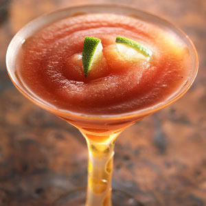

| Strawberry Margaritas | |
|---|---|
|  | Combine strawberries, ice, tequila, lime juice, sugar, and liqueur in a blender, and process until the mixture is smooth. Pour the margaritas into 4 large glasses. Garnish margaritas with a lime wedge, if desired. Serve immediately. |